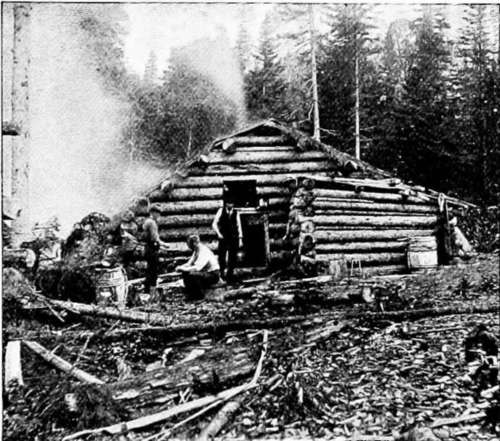
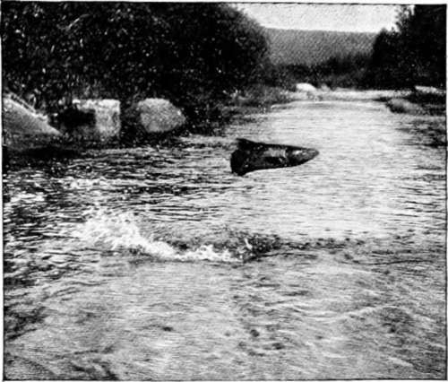
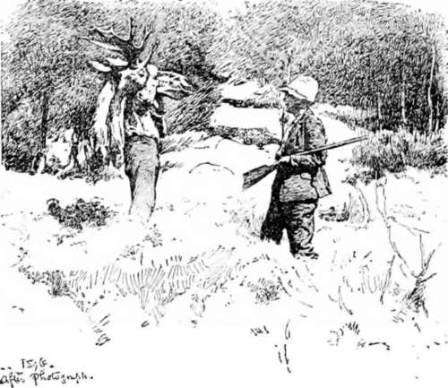
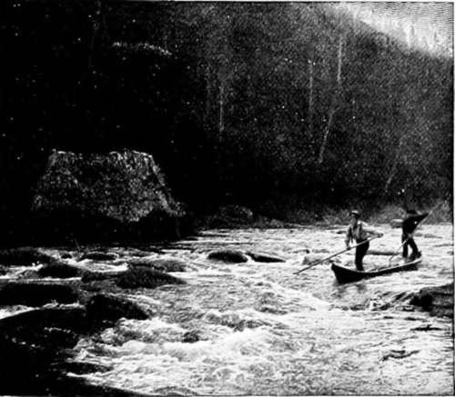

Sport In An Untouched American Wilderness. Part 2
Description
This section is from the book "Hunting", by Archibald Rogers. Also available from Amazon: Hunting.
Sport In An Untouched American Wilderness. Part 2
During the nine weeks of our absence, were we lost and starving? No! We were having the pleasantest time of all our lives, and we fared sumptuously every day. It was an experience to make one feel that civilization does not matter much, and that our savage ancestors had rather the best of it. When heavy snow came unexpectedly early in November, the guide and cook built a thirty-foot dugout in a week, hewing it out of a big hermit pine, dragged the craft a mile over the snow to a stream; and after a five days' run, over rapids and around cataracts, we came out on the other side of the Province. The first man we met on the lower river sang out, "Hello, Braithwaite! is that you? They're offering fifty dollars to the man who will go into Little Southwest country to hunt you up, and nobody will take it." News of the delayed travellers had spread all over the country.
This article is not intended as a chronicle of game slaughter. No idea of that region is complete, however, which does not impress the constant presence of the moose-track. The borders of the lakes, the mossy barrens, the deep woods, all the places where hoof-prints can be made, are full of impressions of the tireless feet of moose and caribou. The New Brunswick law allows a man to kill only two moose and three caribou in a season, and only one moose for each member of a party of three or more. If one is any kind of a shot he can be pretty sure of at least one chance at a moose, especially if his guide is a good "caller." It is in this respect that Mr. Braithwaite is above every other New Brunswick guide. He is, in his way, the musical peer of Ysaye or Paderewski; and his solo instrument is the birch-bark horn.
An Old Camp
A Salmon Jumping.
The future of the moose, oldest and noblest of the game animals on this continent, is a matter that has interested a good many people. Mr. Braithwaite, who has lived among these animals all his life, says there is no danger of their diminution in New Brunswick. They shed their antlers before the snow becomes deep in winter, and the sportsman who endeavors to carry away a hornless moose is always roughly dealt with by the magistrates down in the settlements. The only relentless enemy of the moose is the lumberman, who in the depth of winter can make good use of the meat. But in the region which is the subject of this article, there is little lumber, and so there are few lumbermen. The degenerate Indians of the villages seldom trouble themselves to hunt, and the few moose killed by hunters are as nothing compared with the young ones destroyed by the bears. Bruin gets trapped, because his coat will average twenty dollars to his captor. There are no wolves in this wilderness; so the prospects for the moose are getting better instead of worse. And if there are thousands of moose, there are tens of thousands of caribou.
The Boy and the Moose-Head.
The males of both species, about the time of the first full moon in October, will come to the deceitful music of the hunter's birch-bark horn. But the imitation of the cow's call must be very clever, or it will not succeed; and so very few moose are shot in this way. The distance at which the real moose-call can be heard is something wonderful. I have heard it echoing over a lake at least five miles across. But the hunter who, on a perfectly still evening, can provoke a response from the hills a mile away, is an artist; and probably there are not three men in all New Brunswick who can do it well.
The horn with which the calling is done is very simple in its construction. The guide can in five minutes at any time find a suitable birch-tree, from which he cuts a sheet of bark about fifteen inches square. This he rolls up in the form of a cornucopia, making the aperture at the small end about three-quarters of an inch in diameter, and at the larger end about four inches. A tough spruce root, which can be pulled from the ground almost anywhere, furnishes a string with which to tie the horn so that it will retain its shape. When the larger end is trimmed, the horn is ready for business.
Lively Running.
So charming a place did I find the modern Acadia in 1894, that again in 1895, with the same guide, a cook, and a single companion, I spent the greater part of the summer and fall among the mountains and lakes, fishing a little, shooting a little, and resting a great deal. If life on earth had no more for me, I should feel that the recollections of those two seasons in the New Brunswick woods had made it worth living.
* There are fifty miles like this on the Little Southwest Miramichi.
For the sake of communication with the outside world, we employed a special mail-carrier, who made the round trip to the railroad station and return about once in ten days. We would tell him each time about where our camp should be; and when he struck the stream on which we were temporarily located, he would travel up or down along the banks until he found us. There were no other people within many miles of us; and if he saw human footprints on a sandbar, or axe-marks on a tree, he knew that we had made them, and were in the immediate vicinity. The ease with which he found us on every occasion, travelling through the woods as he did where there were no roads, was one of the most clever feats of woodcraft that I have ever seen.
The wealth of animal life in those woods was constantly forced upon our attention. Impudent moose-birds would alight on our improvised dinner-table, and the red squirrels and white-bellied mice quarrelled for the fallen crumbs, while after nightfall the chattering martens would shriek out their cat-like disputes over the fish-heads in the rear of the camp. Often we heard the short, coughing bark of the fox in the still hours of the night. In the farther depths of the wilderness we saw the beaver's logging operations and river improvements still carried on. At one place we found a beaver-house so big and strong that a bull-moose had walked up on it, and from the top pawed defiance, yet his great weight had not broken the structure down.
Continue to:
- prev: Sport In An Untouched American Wilderness
- Table of Contents
- next: Sport In An Untouched American Wilderness. Part 3